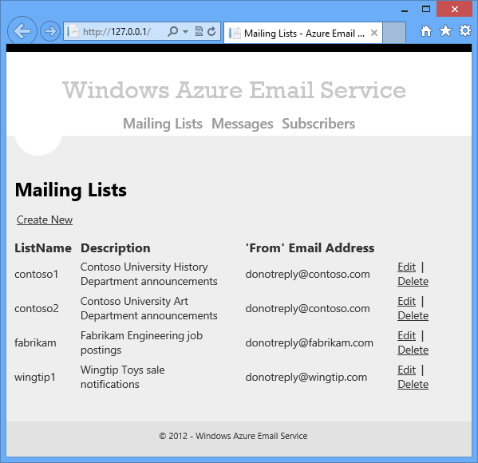
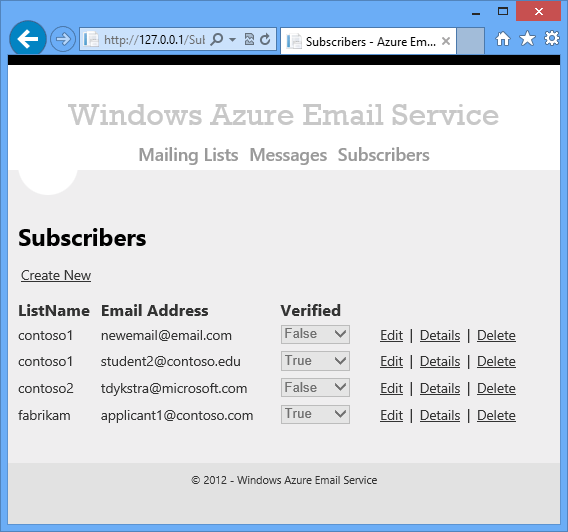
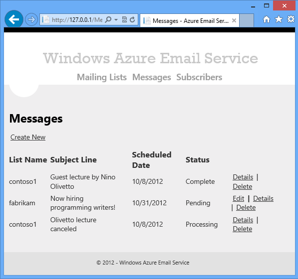
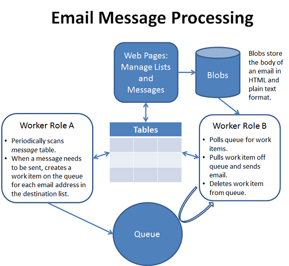

A Visual Studio project that shows how to use Windows Azure Storage tables, queues, and blobs in a multi-tier application that has an ASP.NET MVC 4 web role on the front-end and worker roles on the back-end.
To run the project, download it and follow the directions at Configuring and Deploying the Windows Azure Email Service application.
Description
The sample and the accompanying tutorial demonstrate how to use features of Windows Azure and tools you can use with Windows Azure:
The sample is a mailing list application. The front-end includes web pages that administrators of the service use to manage email lists.



The front-end also enables users to subscribe to lists and unsubscribe from lists by using web pages and a Web API service method. The back-end has two worker roles, one to schedule emails and one to send them.

The application uses Windows Azure Storage tables to store email lists, subscribers, and messages to be sent to email lists. It uses queues to coordinate work between the two worker roles and between the web role and the worker role that sends emails. It enables administrators to upload the body of a message in HTML and plain text files, and it stores these files in blob storage.
For more information, see the tutorial that accompanies the sample: .NET Multi-Tier Application Using Storage Tables, Queues, and Blobs.